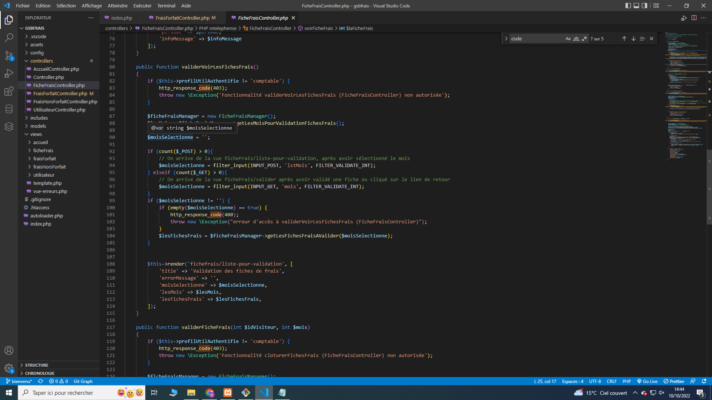

COMPETANCES
- - Gérer le patrimoine informatique
- - Répondre aux incidents et aux demandes d’assistance et d’évolution.
- - Développer la présence en ligne de l’organisation
- - Travailler en mode projet
Contexte
Le laboratoire Galaxy Swiss Bourdin (GSB) est issu de la fusion en 2009 entre le géant américain Galaxy, spécialisé dans le
secteur des maladies virales dont le SIDA et les hépatites, et le conglomérat européen Swiss Bourdin.
L’entité Galaxy Swiss Bourdin Europe a établi son siège administratif à Paris tandis que le siège social de la multinationale
est situé à Philadelphie, en Pennsylvanie, aux États-Unis.
L’entreprise compte 480 visiteurs médicaux en France métropolitaine et 60 dans les départements et territoires d’outremer. Les visiteurs médicaux sont répartis en 7 secteurs géographiques : Paris-Centre, Sud, Nord, Ouest, Est, DOM-TOM
Caraïbes-Amériques, DOM-TOM Asie-Afrique.
Les visiteurs médicaux démarchent les professionnels de santé susceptibles de prescrire aux patients les produits du
laboratoire. L’objectif d’une visite n’est pas de vendre mais d’actualiser la connaissance de ces professionnels sur les
produits de l’entreprise. Les déplacements qu’ils mènent, engendrent des frais qui doivent être pris en charge par la
comptabilité. Une gestion forfaitaire des principaux frais permet de limiter les justificatifs. Le remboursement est fait après
le retour de ces pièces.
Situation professionnelle
L'application GsbFrais a été déployée depuis peu. Après une phase de maintenance corrective qui a permis de corriger un certain nombre d’anomalies, il est temps maintenant de passer en phase de maintenance évolutive afin d’apporter des améliorations à l’application.
Description de la mission
Je suis chargé de rajouter une fonctionnalité pour faciliter aux administrateur la suppervision des utilisateurs.
Ressources fournies
La note de service exprimant le besoins d’évolutions des utilisateurs.
{kind=link}
Contraintes
L'application respecte l'architecture applicative et les standards PSR-1, PSR-12 et PSR-4
Production réalisée
Le code source de l'application corrigée
{kind=link}

compte-rendu des modifications apportées
Ma mission consiste à rajouter une fonctionnalité permettant
aux profils administrateur de gérer l'ajout, la suppression, la consultation et la modification d'utilisateurs.
Dans le modele :
Au niveau du model, j'ai rajouter dans la classe UtilisateurManager les méthodes publics :
- GetLesUtilisateurs
- GetUtilisateur
- AjouteUtilisateur
- ModifierUtilisateur
- SupprimerUtlisateur
{kind=link}
{kind=link}
{kind=link}
{kind=link}